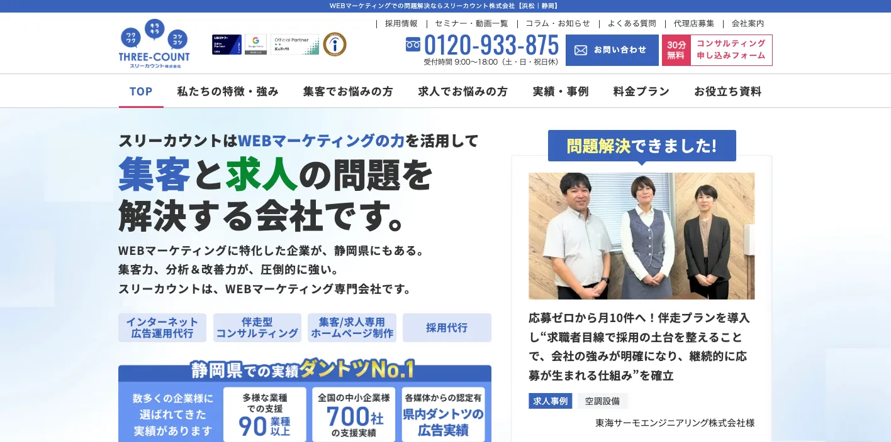
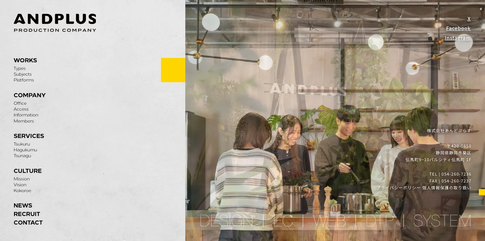
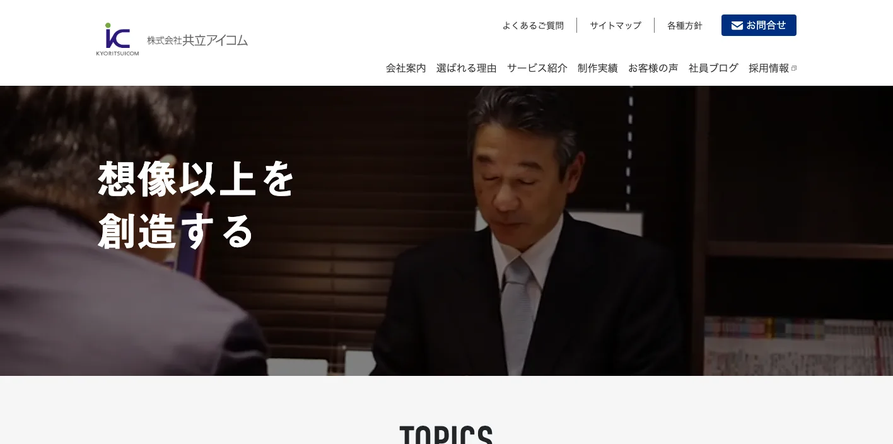
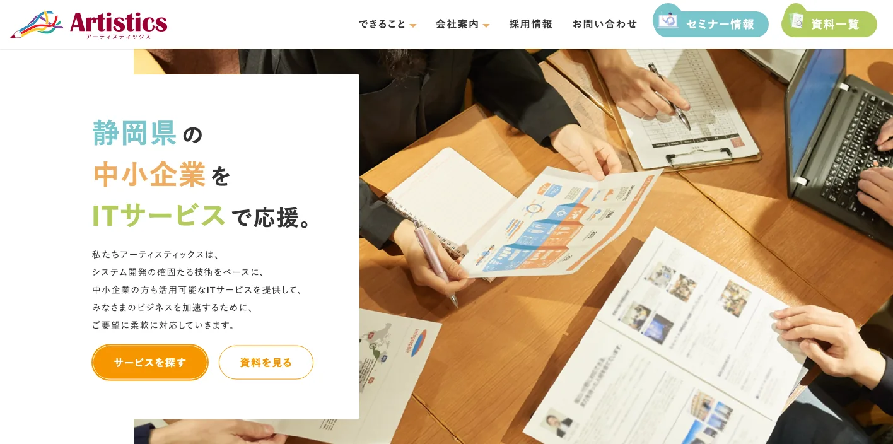
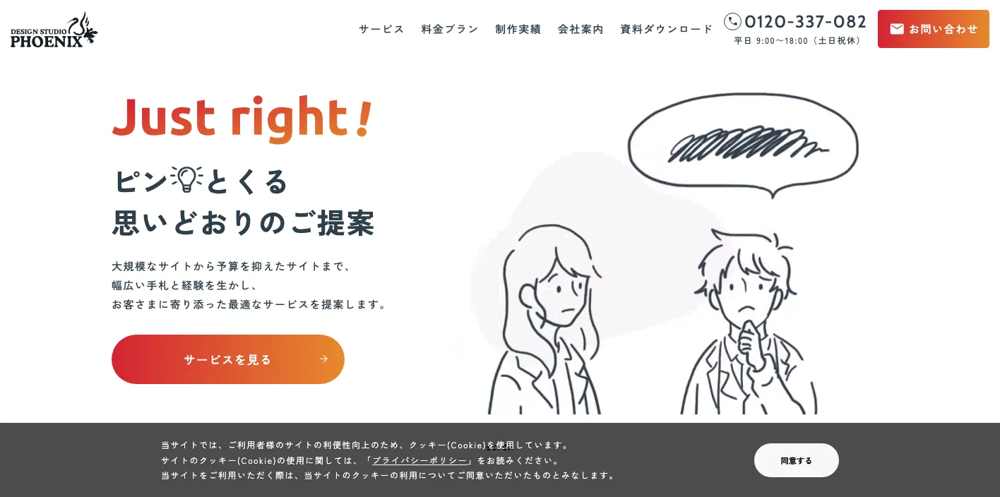
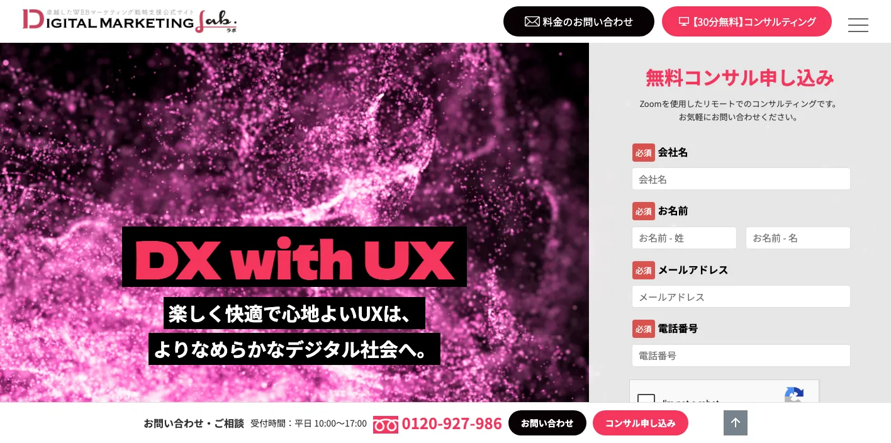
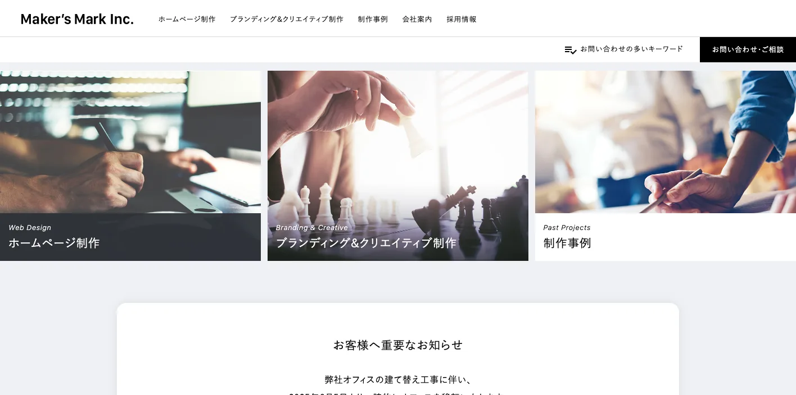
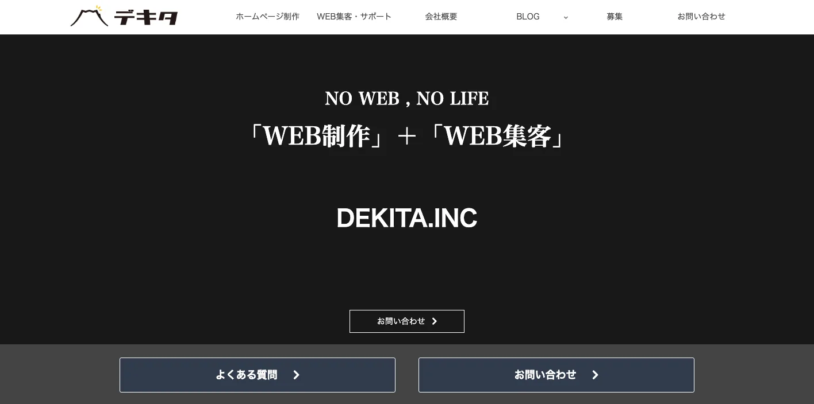
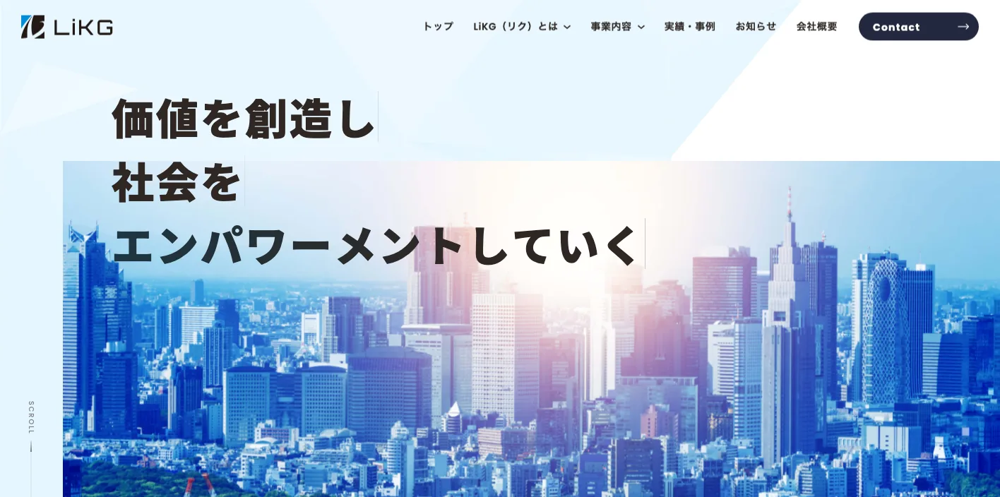

静岡県でおすすめのLLMO会社10選｜費用相場と選び方もわかりやすく解説

静岡県でLLMO会社を選ぶときは、「静岡のホームページ制作会社」や「浜松のSEO会社」という探し方だけでは足りません。静岡市の行政・医療・食品・観光、浜松市の輸送用機械・楽器・ものづくり、富士市・富士宮市の紙・CNF・富士山周辺、沼津・三島・伊豆の観光と医療、焼津・藤枝の食品・物流では、AI検索で聞かれる質問が大きく変わるからです。
静岡県の推計人口は、2026年4月1日現在で3,471,700人、世帯数は1,539,280世帯です。令和6年度の観光交流客数は1億4,034万人、宿泊客数は1,950万人、観光レクリエーション客数は1億2,084万人でした。2024年経済構造実態調査の静岡県分では、製造業の事業所数が10,530事業所、従業者数が408,750人、製造品出荷額等は約19兆7,732億円規模でした。県の企業立地ガイドでも、2000年から2024年の累計工場立地件数は全国1位、製造品出荷額は全国トップクラスと説明されています。
この記事では、静岡県でLLMOに取り組むときに比較したい会社、選び方、費用相場をまとめます。基礎から確認したい方はLLMO対策の基礎記事、東海圏の近隣県も見たい方は愛知県の比較記事や岐阜県の比較記事も参考になります。自社サイトの現状を先に見たい場合は無料LLMO診断から確認できます。
目次

静岡県でおすすめのLLMO会社10選
今回は、静岡県内に拠点があり、ホームページ制作、SEO、Webマーケティング、EC、広告、システム開発、運用改善などの公開情報を確認しやすい会社を中心に選びました。県内でLLMO専業を前面に出す会社はまだ多くないため、AI検索対策を明示している全国対応会社も補完的に加えています。
静岡県では、浜松の製造業、静岡市の生活者向けサービスと食品、富士・富士宮のものづくり、沼津・三島・伊豆の観光、焼津・藤枝の食品・物流など、AIに答えさせたい質問が地域ごとに変わります。まずは表で向いている企業を確認し、その後に各社の特徴を見てください。
| 会社名 | 主な拠点・対応 | 向いている企業 | 確認できる主な支援領域 |
|---|---|---|---|
| スリーカウント株式会社 | 浜松市・静岡市・全国対応 | 集客、求人、広告、SEOをまとめて改善したい企業 | Webマーケティング、広告運用、ホームページ制作、SEO、採用支援 |
| 株式会社あんどぷらす | 静岡市 | EC、Webシステム、ブランドを一体で設計したい企業 | EC構築、Webシステム設計、Web制作、ブランド構築 |
| 株式会社共立アイコム | 藤枝市・東京 | Web、印刷、販促、物流、地域メディアをまとめたい企業 | Web制作、Web分析、広告、システム、印刷、販促、発送代行 |
| 株式会社アーティスティックス | 沼津市 | 東部の中小企業でWebと業務システムを同時に見直したい企業 | ホームページ制作、EC、SEO、広告、Salesforce、kintone、生成AI研修 |
| デザインスタジオフェニックス | 静岡市 | 静岡市周辺で制作・運用・撮影・集客を相談したい企業 | ホームページ制作、運用、マーケティング支援、写真動画、システム |
| 株式会社アドテクニカ | 静岡市 | SEOに強いCMSとデジタルマーケティング基盤を重視したい企業 | デジタルマーケティング、CMS、SEO、EFO、Web制作、システム |
| 株式会社メーカーズマーク | 浜松市 | Web制作、ブランディング、採用、コンテンツをまとめたい企業 | ホームページ制作、SEO、Webコンサル、ブランディング、採用ツール |
| 株式会社デキタ | 富士市 | SEO、MEO、広告、Web集客を重視したい中小企業 | ホームページ制作、Web集客、SEO、MEO、広告、保守管理 |
| 株式会社LiKG | 全国対応 | AI検索診断とLLMO×SEOを明示して依頼したい企業 | LLMO診断、LLMO×SEOコンサル、記事制作、EEAT強化 |
| 株式会社ジオコード | 全国対応 | SEO、AIO、LLMO、実装、コンテンツまでまとめたい企業 | SEO、AIO/LLMO、コンテンツ、UI/UX、サイト修正、Web制作 |
株式会社AIMAは静岡本社の会社ではありませんが、全国対応でLLMO支援を提供しています。月額5万円のLLMO支援は初期費用なし・1ヶ月単位で始められ、質問設計、記事制作、引用チェックに絞って実務を進められます。静岡市、浜松市、富士市、沼津市、三島市、熱海市、伊豆市のように検索文脈が分かれる場合も、まず無料LLMO診断で優先順位を確認できます。
スリーカウント株式会社

スリーカウント株式会社は、浜松市と静岡市に拠点を持つWebマーケティング会社です。公式サイトでは、Webマーケティングの力で「集客」と「求人」の問題を解決する会社として、リスティング広告、Meta広告、業種別広告運用、伴走支援型Webマーケティング、集客特化型ホームページ制作、成果報酬型SEO、Indeed・求人ボックス広告、採用特化型ホームページ制作などを確認できます。
静岡県では、浜松市の製造業、住宅、学習塾、求人、BtoB、静岡市の店舗・医療・採用など、Webからの問い合わせと採用が同時に課題になりやすいです。スリーカウントは、広告、SEO、採用、ホームページを分けず、成果につながる導線までまとめて相談したい企業に向いています。
参考：スリーカウント株式会社｜トップページ、参考：スリーカウント株式会社｜SEO対策サービス
株式会社あんどぷらす

株式会社あんどぷらすは、静岡市を拠点に、EC構築、Webシステム設計、ブランド構築まで一貫して支援する制作会社です。公式サイトでは、静岡を拠点にデザインとエンジニアリングを統合したWeb・EC・Webシステム構築を行う会社と説明されています。ECやWebシステムを起点に、ブランドの見せ方まで整えたい会社に向いています。
静岡県では、お茶、食品、水産加工品、楽器、アウトドア、工芸品、観光土産、産直品など、ECと地域ブランドが近い領域が多くあります。LLMOでは、商品情報、使い方、比較、ギフト、法人利用、配送、在庫、FAQをAIが読み取りやすい形で整理する必要があります。あんどぷらすは、ECやWebシステムまで含めて情報設計したい企業に合います。
株式会社共立アイコム

株式会社共立アイコムは、藤枝市に本社を置くWeb制作・印刷広告・販促支援会社です。公式サイトでは、Web制作・ホームページ制作、ホームページ運営、ランディングページ制作、Web分析・改善・コンサルティング、インターネット広告代行、UI/UXデザイン、Webシステム開発、印刷、企画・販売促進、発送代行・全国流通、採用プロモーション、動画・写真・ライティングなどを確認できます。Web制作ページでは、静岡県藤枝市で創業60年超、全国で1000サイト超の制作実績も示されています。
焼津・藤枝・島田周辺では、食品、製造、物流、官公庁、学校、地域商店、採用、イベントなど、紙とWebをまたいだ情報発信が多くなります。共立アイコムは、Webだけでなく、印刷物、販促、発送、地域メディア、採用ツールまで一体で整えたい企業に向いています。LLMOでも、Web外に散らばった情報を整理してページ化する力が重要です。
参考：株式会社共立アイコム｜トップページ、参考：株式会社共立アイコム｜Web制作・ホームページ制作
株式会社アーティスティックス

株式会社アーティスティックスは、沼津市のホームページ制作・クラウド導入・システム開発会社です。公式サイトでは、静岡県の中小企業をITサービスで応援する会社として、ホームページ制作、ECサイト制作、Web広告配信、SEO設計と運用支援、マーケティングオートメーション、Salesforce、kintone導入支援、業務支援システム、生成AI導入トレーニング研修などを確認できます。
沼津、三島、富士、御殿場、伊豆周辺では、観光、医療、製造、建設、食品、採用、BtoB営業が混ざります。LLMOでは、問い合わせ前の比較に必要なFAQだけでなく、顧客管理や営業プロセスまでつなげると効果を見やすくなります。アーティスティックスは、Webと業務システムを同時に整えたい東部地域の中小企業に向いています。
デザインスタジオフェニックス

デザインスタジオフェニックスは、静岡市のホームページ制作・Web制作会社です。公式サイトでは、ホームページ制作、ホームページ運用、マーケティング支援、写真・動画撮影、システム開発、料金プラン、制作実績を確認できます。企業サイト、採用サイト、ECサイト、運用、Web広告、検索順位改善など、目的別の相談に対応している点もわかります。
静岡市周辺では、地域サービス、医療、学校、食品、採用、観光、行政関連の情報発信が多く、写真や動画の質も信頼に影響します。LLMOでは、ユーザーがAIに聞く「どんな会社か」「誰に向くか」「料金はどうか」「どう申し込むか」に答える必要があります。デザインスタジオフェニックスは、制作から運用・撮影・集客まで地場で相談したい企業に向いています。
株式会社アドテクニカ

株式会社アドテクニカは、静岡市のデジタルマーケティング・クラウドサービス会社です。公式サイトでは、デジタルマーケティングプラットフォーム「フリーコード」を開発提供する静岡市のDX企業として、SEOに強いDXプラットフォーム、CMS、EFO、デザイン、更新性、セキュリティ、Webサイト制作、マーケティング支援、料金プラン、制作実績などを確認できます。ホームページ制作のモデルプランも掲載されています。
静岡県の中堅企業やBtoB企業では、サイトを作って終わりではなく、CMS、フォーム、営業資料、採用、分析、セキュリティまで含めた運用基盤が必要になります。アドテクニカは、SEOに強いCMSやデジタルマーケティング基盤を重視し、継続的に更新・改善していきたい企業に向いています。
参考：株式会社アドテクニカ｜デジタルマーケティングラボ、参考：株式会社アドテクニカ｜トップページ
株式会社メーカーズマーク

株式会社メーカーズマークは、浜松市のWeb制作・ブランディング会社です。公式サイトでは、ホームページ制作・管理・運用、コンテンツマーケティング・SEO、Webコンサルティング、ブランディング、採用ブランディング、エディトリアルデザイン、制作事例などを確認できます。基本ホームページ制作、Webコンサルティング、ホームページ運用・管理の料金目安も公開されています。
浜松市周辺では、製造業、BtoB、採用、展示会、製品カタログ、技術紹介、社内外ブランディングが重要になりやすいです。LLMOでは、AIに拾われるための独自情報、事例、技術説明、採用メッセージ、社内外向けのストーリーが必要です。メーカーズマークは、単なる制作ではなく、コンテンツとブランドを育てたい企業に向いています。
参考：株式会社メーカーズマーク｜トップページ、参考：株式会社メーカーズマーク｜ホームページ制作・運用
株式会社デキタ

株式会社デキタは、富士市のホームページ制作・Web集客支援会社です。公式サイトでは、ホームページ制作、Webコンサルティング、Webマーケティング、SEO対策、インターネット広告、Web集客・サポート、MEO、保守・管理などを確認できます。Webサイト制作実績3000サイト以上、Web集客に20年の経験、費用は50万円から300万円のケースが多いことも示されています。
富士市・富士宮市周辺では、製紙、食品、製造、医療、住宅、地域サービス、富士山観光が近い位置にあります。デキタは、SEO、MEO、広告、保守まで含めて、Web集客を実務で改善したい企業に向いています。LLMOでは、検索エンジンに強い構造と、AIが理解しやすいFAQ・事例・地域情報の両方が必要です。
株式会社LiKG

株式会社LiKGは、全国対応のWebマーケティング会社です。公式のLLMOコンサルティングページでは、AI検索における現状を診断で可視化し、SEO対策の知見をベースにAI検索エンジンを最適化する支援を確認できます。料金例として、LLMO診断プラン10万円から、LLMO×SEOコンサルティングプラン30万円から、EEAT強化記事制作5万円からが掲載されています。
静岡県内の制作会社に取材や制作を任せつつ、AI検索診断、質問設計、構造化データ、独自データ活用、記事改善は専門会社に任せたい場合があります。LiKGは、観光、製造、EC、医療、採用などで、AI検索で自社がどう見えるかを先に可視化したい企業に向いています。
株式会社ジオコード

株式会社ジオコードは、SEO、AIO、LLMOなどAI最適化も支援する全国対応会社です。公式サイトでは、SEO・コンテンツ・オウンドメディアからAIO・LLMOなどAI最適化まで支援すること、SEO対策コンサルティング、コンテンツマーケティング、AIO・LLMO、UI/UX改善、広告運用、LP・バナー制作などを確認できます。料金例として、SEOの通常プラン15万円から、サービスサイト制作300万円から、メディアサイト制作200万円からも掲載されています。
ジオコードは、サイト修正や記事制作、UI/UX改善まで含めて、実装力を重視したい企業に向いています。静岡県の製造業、観光、医療、EC、採用では、AI検索で名前が出るだけでなく、問い合わせや予約につながるページ構造が必要です。SEO、AIO、LLMOを一体で見たい場合の比較候補になります。
静岡県のLLMO会社を比較する際のポイント
ここでは、会社紹介で見た「誰に向いているか」とは別に、静岡県で発注前に確認すべき比較軸を整理します。静岡県は、東西に長く、産業と観光の文脈が大きく分かれます。同じ県内でも、静岡市、浜松市、富士・富士宮、沼津・三島・伊豆、焼津・藤枝で必要な情報設計は変わります。
静岡市は、行政・医療・食品・採用の情報整理力を見る
静岡市周辺では、行政関連、医療、教育、士業、食品、採用、店舗、地域メディア、観光が混ざります。「静岡市 病院 採用」「静岡 食品メーカー OEM」「静岡市 ホームページ制作」のように、生活者向けと法人向けの質問が同時に出やすい地域です。
LLMO会社を比較するときは、トップページをきれいにするだけでなく、サービス別ページ、料金、事例、FAQ、採用、アクセス、地域名ごとの対応情報をどう分けるかを聞いてください。AIが回答を作るには、ページごとに役割が整理されている必要があります。
浜松市は、製造業・楽器・モビリティの技術情報を出せるかを見る
県の企業立地ガイドでは、静岡県西部で「次世代モビリティ」や「フォトンバレー」のイノベーション拠点形成に取り組んでいることが示されています。浜松市周辺は、輸送用機械、楽器、光技術、部品加工、BtoB製造、採用、展示会の文脈が強い地域です。
製造業のLLMOでは、設備、加工範囲、素材、ロット、品質管理、納期、試作、量産、取引実績、認証、技術者採用が重要です。比較する会社には、営業資料や現場情報をWeb上の一次情報に変換できるかを確認してください。
富士・富士宮は、紙・CNF・富士山観光・地域サービスを分ける
県の産業集積ページでは、東部地域で「ふじのくにCNF」や「ファルマバレー」などの拠点形成に取り組んでいることが示されています。富士市・富士宮市は、紙・パルプ、食品、製造、医療・健康、富士山周辺観光、地域店舗が混ざる地域です。
この地域では、BtoBの技術情報と、富士山観光・地域サービスの情報を同じ調子で作らないことが大切です。製造業なら技術と実績、観光ならアクセスと体験、地域店舗なら料金と予約を分けて、AIが迷わず答えられる構造にしてください。
沼津・三島・伊豆は、観光と医療・生活商圏の両方を見る
令和6年度の静岡県観光交流客数は1億4,034万人、宿泊客数は1,950万人でした。伊豆、熱海、下田、沼津、三島、御殿場、富士山周辺では、観光、宿泊、温泉、交通、駐車場、子連れ、外国人対応、日帰り、モデルコースの質問が多くなります。一方で、医療、士業、住宅、教育、採用など生活商圏の検索もあります。
観光事業者なら、季節別の過ごし方、雨の日、アクセス、予約、キャンセル、周遊、外国語対応まで整理できる会社を選んでください。生活者向けサービスなら、地域名、料金、対応範囲、口コミ、事例、FAQを丁寧に作れる会社が向いています。
焼津・藤枝・島田は、食品・物流・販促をWebだけで考えない
焼津・藤枝・島田周辺では、食品、水産加工、茶、物流、製造、地域商店、学校、官公庁、イベント、採用など、紙、Web、EC、展示会、発送がつながる案件が多くなります。LLMOでAIに拾われる情報も、Webページだけでなく、会社案内、商品カタログ、パンフレット、営業資料、FAQから作る必要があります。
比較する会社には、既存の紙資料や営業資料を読み解き、Webページ、FAQ、事例、商品ページに変換できるかを確認してください。食品や茶では、産地、原材料、賞味期限、保存、法人取引、ギフト、配送、定期購入の情報が重要です。
県内会社と全国対応会社は、役割を分けて考える
静岡県内の会社は、現地取材、撮影、県内商圏、製造現場、観光地、地域メディアの理解に強いことが多いです。一方で、LLMOを明示する全国対応会社は、AI検索診断、構造化データ、既存記事改善、全国競合との比較、専門チームでの検証に強い場合があります。
おすすめは、最初に「何が足りないか」を切り分けることです。サイトが古い、写真が足りない、商品説明が薄い、現地取材が必要なら県内会社。記事は多いのにAI検索で出ない、構造化データや競合比較が弱いなら全国対応会社。両方必要なら、県内会社に制作を任せ、LLMO会社に設計とチェックを任せる形もあります。
参考：令和8年4月市区町別推計人口、静岡県における観光交流の動向、R6年度観光交流の動向、2024年経済構造実態調査（製造業事業所調査）統計表、静岡県 多様な産業集積
静岡県のLLMO会社に依頼する費用相場
LLMOの費用は、診断だけなのか、記事制作まで含むのか、サイト改修、撮影、EC、予約、採用、CRM、システム開発まで必要なのかで変わります。静岡県では、浜松の製造業、静岡市の食品・医療・採用、富士・富士宮のものづくり、伊豆・熱海の観光、焼津・藤枝の食品・物流で、必要なページやFAQの量が大きく変わります。
| 依頼内容 | 費用目安 | 静岡県での考え方 |
|---|---|---|
| LLMO診断・AI検索の現状確認 | 無料〜10万円前後 | 自社名、地域名、業種名、観光名、商品名でAIにどう出るかを見る段階 |
| 小規模なSEO・LLMO運用 | 月額5万円〜15万円前後 | FAQ、地域ページ、既存記事改善、事例追加を小さく回す段階 |
| 伴走型のSEO・LLMO支援 | 月額15万円〜30万円前後 | 競合調査、構成作成、構造化データ、改善提案、定例を含む段階 |
| サイト制作・改修込み | 40万円台〜300万円超 | 撮影、採用、EC、予約、CRM、製品情報、システム連携の有無で広がる |
| 観光・製造・EC・採用の本格運用 | 月額30万円以上 | 複数地域、商品カテゴリ、営業資料、事例制作、多言語対応まで必要な段階 |
診断だけなら、まずは質問の棚卸しが中心
診断では、「静岡 LLMO会社」「浜松 製造業 Web集客」「静岡市 採用サイト」「伊豆 温泉 子連れ」「富士山 観光 日帰り」「焼津 食品 OEM」のような質問で、自社や競合がAIにどう扱われているかを確認します。いきなり記事を増やすより、どの質問で選ばれたいかを決めることが先です。
静岡県の場合、製造、観光、食品、医療、採用、ECで質問の形が変わります。診断費用が安くても、調査する質問が浅いと意味がありません。県内の地名、業種、季節、購買目的、法人利用まで含めて見てくれるかを確認してください。
月額5万〜15万円は、既存サイトを育てる段階
小規模運用では、既存ページの修正、FAQ追加、地域ページ、事例ページ、お知らせ、ブログの改善を進めます。静岡市や浜松市の店舗、士業、治療院、住宅、採用、観光施設、食品ECなどは、最初から大きな改修をせず、AIに拾われやすい基本情報を増やすだけでも前進します。
この価格帯では、毎月大量の記事を作るより、料金、対応エリア、予約、アクセス、キャンセル、事例、よくある質問を整えるほうが現実的です。文章の量より、ユーザーの疑問に答える密度を重視してください。
月額15万〜30万円は、競合調査と構造改善まで含める段階
静岡県の企業では、浜松の製造、伊豆・熱海の観光、富士山周辺、食品・茶・水産加工、医療・健康、採用など、競合が県内だけでなく全国に広がる領域があります。この場合、既存記事の修正だけでなく、競合調査、検索意図の分類、構造化データ、内部リンク、CV導線、事例作成が必要です。
社内に担当者がいるなら、LLMO会社には戦略と構成を任せ、社内で商品情報や現場情報を出す形にすると費用対効果が上がります。社内に人がいない場合は、取材、撮影、入稿、レポートまで含めた伴走型を選ぶ必要があります。
制作・撮影・EC・CRMを含めると、総額は大きく変わる
ホームページを作り直す、写真撮影をする、動画を作る、採用ページを整える、ECや予約システム、Salesforceやkintoneなどの業務ツールとつなぐ場合は、費用が大きく変わります。静岡県では、宿泊、観光施設、食品、製造、医療、住宅、採用で、写真や事例が成果に直結しやすいです。
たとえば、メーカーズマークは基本ホームページ制作の料金目安を40万円から、Webコンサルティングを月額10万円から、運用・管理を月額1万円からと掲載しています。アドテクニカのデジタルマーケティングラボでは、ホームページ制作のStartモデル665,000円から、Normalモデル945,000円からなどのモデルプランが掲載されています。ジオコードのような全国対応会社では、SEO通常プラン15万円から、サービスサイト制作300万円からのような大きな制作・改善費用もあります。
製造・観光・食品は、一次情報づくりの費用を見込む
AI検索で引用されるには、他社にもある一般論ではなく、自社にしかない一次情報が必要です。製造なら設備、加工範囲、対応ロット、検査体制、納期、試作、量産。観光なら季節別の体験、アクセス、混雑、駐車場、予約、キャンセル。食品なら原材料、産地、賞味期限、保存、法人利用、ギフト、配送の説明です。
この一次情報を作るには、取材、撮影、社内ヒアリング、資料整理が必要です。見積もりを見るときは、記事本数だけでなく、情報を引き出す工程が含まれているかを確認してください。
参考：株式会社メーカーズマーク｜ホームページ制作・運用、株式会社アドテクニカ｜デジタルマーケティングラボ、株式会社デキタ｜トップページ、株式会社LiKG｜LLMOコンサルティング、株式会社ジオコード｜SEO対策・AI最適化
静岡県のLLMO会社に関するよくある質問
静岡県のLLMO会社に依頼する意味はありますか？
あります。静岡県は、静岡市、浜松市、富士市、沼津市、三島市、伊豆、焼津、藤枝で、検索される内容が大きく変わります。製造、観光、食品、医療、採用、ECごとに、AIが引用しやすい一次情報を整理する意味があります。
静岡県内の会社でないとLLMOは任せられませんか？
必ずしも県内本社である必要はありません。現地取材、撮影、観光地、工場、地域商圏の理解が必要なら県内会社が向きます。一方で、AI検索診断、構造化データ、既存記事改善、全国競合との比較は、LLMOを明示している全国対応会社も選択肢になります。
静岡市と浜松市では、対策内容は変わりますか？
変わります。静岡市は行政、医療、食品、採用、地域サービス、観光の情報整理が重要になりやすく、浜松市は製造、モビリティ、楽器、BtoB、採用、展示会、技術情報が重要になりやすいです。同じ県内でも、ページで答える内容を分ける必要があります。
伊豆・熱海・富士山周辺の観光業でもLLMOは必要ですか？
必要です。宿泊、交通、季節、天候、外国人対応、子連れ、駐車場、混雑、予約、キャンセル、モデルコースなど、ユーザーがAIに聞きやすい質問が多いからです。施設紹介だけでなく、誰に向くか、いつ行くべきか、何に注意すべきかを整理する必要があります。
静岡県の製造業でもLLMOは使えますか？
使えます。輸送用機械、電気機械、食品、化学、紙・パルプ、医療・健康関連では、設備、加工範囲、素材、対応ロット、品質管理、OEM対応、導入実績をAIが読み取りやすい形で出すことが重要です。BtoBでは製品ページ、事例、FAQの精度が問い合わせ前の比較に効きます。
お茶・食品・水産加工品では何を整えるべきですか？
産地、原材料、製法、賞味期限、保存方法、ギフト、法人利用、卸販売、配送、定期購入、アレルギー、レシピ、海外対応を整えるべきです。AI検索では「どれを選ぶべきか」「誰に向くか」「法人利用できるか」が聞かれやすいです。
静岡県のLLMO費用はどれくらい見ておけばよいですか？
診断だけなら無料から10万円前後、小さな運用なら月額5万円から15万円前後、伴走支援は月額15万円から30万円前後が目安です。撮影、取材、サイト改修、EC、予約、CRM、採用、製品ページ、多地域展開を含めると総額は上がります。
成果が出るまでの期間はどれくらいですか？
まず3か月から6か月を目安に見ます。既存サイトの情報量、競合の強さ、FAQや事例の整備状況、構造化データ、更新体制によって変わります。短期で断定せず、AI検索での見え方を観測しながら改善する進め方が現実的です。
静岡県でLLMO会社を選ぶなら、東西の商圏と産業別の質問を分けましょう
静岡県でLLMO会社を選ぶときは、県内本社かどうかだけで決める必要はありません。大事なのは、自社がAIに答えてほしい質問を、地域、業種、顧客、購買目的ごとに分けて整理できるかです。静岡市、浜松市、富士・富士宮、沼津・三島・伊豆、焼津・藤枝では、必要な情報設計が変わります。
地域情報や写真、取材、観光地、店舗、工場の理解が重要なら、静岡県内の制作会社を中心に比較してください。すでに記事やページは多いのにAI検索で見えない、構造化データや競合比較を強めたい、全国市場で戦いたい場合は、LLMOを明示している全国対応会社も候補になります。
最初にやるべきことは、会社を選ぶ前に「どの質問で選ばれたいか」を書き出すことです。質問が見えれば、必要な会社も見えます。サイト制作が必要なのか、FAQ追加で足りるのか、観光ページを作るべきか、製品情報を整理すべきか、ECやCRMまで必要なのかを切り分けてから相談すると、無駄な費用を抑えやすくなります。